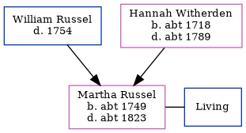

Martha Newby (née Russel) c1749 - c1823
[ Home ] | [ Calendar ] | [ Surnames Index ] | [ Family History ]The child of William Russel and Hannah WitherdenMartha Russel, the first cousin six-times-removed on the father's side of Nigel Horne, was born c. 1749 and baptized in St Peters, Thanet, Kent, England on Jun 2, 1749. She married William Newby there, on Feb 1, 1770.
She died c. 1823 and was buried in St Peters on Mar 25, 18231,2.
Parents
- Hannah was born c. 1718
Citations
- Kent, Canterbury Archdeaconry burials 1538-1988 - Findmypast
- Kent, Canterbury Archdeaconry burials 1538-1988 - Findmypast
Media
England Marriages 1538-1973 - R_847900225/2
Kent, Canterbury Archdeaconry banns 1754-1928 - GBPRS/CANT/M/94040376/2
Kent, Canterbury Archdeaconry burials 1538-1988 - GBPRS/CANT/D/95241520
Family Tree
Generated by ged2site. Last updated on Nov 13, 2024